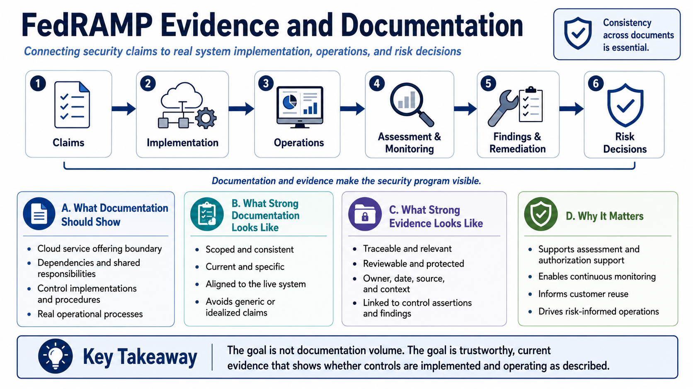

Course Summary and Key Takeaways
Connecting to LMS... Progress: in progress

Narration
FedRAMP evidence and documentation connect security claims to real system implementation, operations, assessment, monitoring, findings, remediation, and risk decisions. They help stakeholders understand what the cloud service offering is, how controls are implemented, what evidence supports those controls, what weaknesses remain, and whether security posture is being maintained over time.
Strong documentation is scoped, consistent, current, specific, evidence-backed, and aligned to the actual cloud service offering. It describes the real boundary, dependencies, shared responsibilities, control implementations, procedures, and operational processes. It avoids generic promises, unsupported statements, and idealized descriptions that do not match the live system. Consistency across documents is essential.
Strong evidence is traceable, relevant, reviewable, protected, and connected to control assertions, findings, remediation, and monitoring. It has an owner, context, date, source, and purpose. It supports a specific claim rather than floating as an unexplained artifact. It is managed carefully because it may contain sensitive security, architecture, vulnerability, or operational information.
The goal is not documentation volume. More documents do not automatically mean better security. The goal is trustworthy evidence that helps stakeholders understand whether controls are implemented and operating as described. When evidence and documentation are accurate, current, and connected to action, they become practical decision support for assessment, authorization support, continuous monitoring, customer reuse, and risk-informed operations.